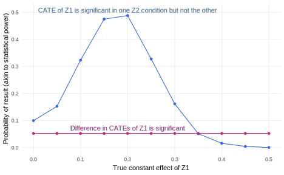

CATE_Z1_Z2_0 <- 0.2
CATE_Z2_Z1_0 <- 0.1
interaction <- 0.1
N <- 1000
declaration_18.7 <-
declare_model(
N = N,
U = rnorm(N),
potential_outcomes(Y ~ CATE_Z1_Z2_0 * Z1 +
CATE_Z2_Z1_0 * Z2 +
interaction * Z1 * Z2 + U,
conditions = list(Z1 = c(0, 1),
Z2 = c(0, 1)))) +
declare_inquiry(
CATE_Z1_Z2_0 = mean(Y_Z1_1_Z2_0 - Y_Z1_0_Z2_0),
CATE_Z1_Z2_1 = mean(Y_Z1_1_Z2_1 - Y_Z1_0_Z2_1),
ATE_Z1 = 0.5 * CATE_Z1_Z2_0 + 0.5 * CATE_Z1_Z2_1,
CATE_Z2_Z1_0 = mean(Y_Z1_0_Z2_1 - Y_Z1_0_Z2_0),
CATE_Z2_Z1_1 = mean(Y_Z1_1_Z2_1 - Y_Z1_1_Z2_0),
ATE_Z2 = 0.5 * CATE_Z2_Z1_0 + 0.5 * CATE_Z2_Z1_1,
diff_in_CATEs_Z1 = CATE_Z1_Z2_1 - CATE_Z1_Z2_0,
#equivalently
diff_in_CATEs_Z2 = CATE_Z2_Z1_1 - CATE_Z2_Z1_0
) +
declare_assignment(Z1 = complete_ra(N),
Z2 = block_ra(Z1)) +
declare_measurement(Y = reveal_outcomes(Y ~ Z1 + Z2)) +
declare_estimator(Y ~ Z1, subset = (Z2 == 0),
inquiry = "CATE_Z1_Z2_0", label = "1") +
declare_estimator(Y ~ Z1, subset = (Z2 == 1),
inquiry = "CATE_Z1_Z2_1", label = '2') +
declare_estimator(Y ~ Z2, subset = (Z1 == 0),
inquiry = "CATE_Z2_Z1_0", label = "3") +
declare_estimator(Y ~ Z2, subset = (Z1 == 1),
inquiry = "CATE_Z2_Z1_1", label = "4") +
declare_estimator(Y ~ Z1 + Z2, term = c("Z1", "Z2"),
inquiry = c("ATE_Z1", "ATE_Z2"), label = "5") +
declare_estimator(Y ~ Z1 + Z2 + Z1*Z2, term = "Z1:Z2",
inquiry = c("diff_in_CATEs_Z1", "diff_in_CATEs_Z2"),
label = "6") 35 Factorial experiments
We declare and diagnose a simple factorial design in which two different treatments are crossed. The design allows for unbiased estimation of a number of estimands including conditional effects and interaction effects. We highlight the difficulty of achieving statistical power for interaction terms and the risks of treating a difference between a significant conditional effect and a non-significant effect as itself significant.
In factorial experiments, researchers randomly assign the level of not just one treatment, but multiple treatments. The prototypical factorial design is a “two-by-two” factorial design in which factor 1 has two levels and so does factor 2. Similarly, a “three-by-three” factorial design has two factors, each of which has three levels. We can entertain any number of factors with any number of levels. For example, a “two-by-three-by-two” factorial design has three factors, two of which have two levels and one of which has three levels. Conjoint experiments are highly factorial, often including six or more factors with two or more levels each (see Chapter 28).
Factorial designs can help researchers answer many inquiries, so it is crucial to design factorials with a particular set in mind. Let’s consider the two-by-two case, which is complicated enough. Let’s call the first factor Z1 and the second factor Z2, each of which can take on the values of zero or one. Considering only average effects, this design can support seven separate inquiries:
- the average treatment effect (ATE) of
Z1, - the ATE of
Z2, - the conditional average treatment effect (CATE) of
Z1givenZ2 = 0, - the CATE of
Z1givenZ2 = 1, - the CATE of
Z2givenZ1 = 0, - the CATE of
Z2givenZ1 = 1, and - The difference-in-CATEs: the difference between inquiry (4) and inquiry (3), which is numerically equivalent to the difference between inquiry (6) and inquiry (5)
The reason we distinguish between the ATE of Z1 versus the CATEs of Z1 depending on the level of Z2 is that the two factors may “interact.” When factors interact, the effects of Z1 are heterogeneous in the sense that they differ depending on the level of Z2. We often care about the difference-in-CATEs inquiry when we think the effects of one treatment will depend on the level of another treatment.
However, if we are not so interested in the difference-in-CATEs, then factorial experiments have another good justification – we can learn about the ATEs of each treatment for half price, in the sense that we apply treatments to the same subject pool using the same measurement strategy. Conjoint experiments are a kind of factorial design (discussed in Chapter 28) that often target average treatments effects that average over the levels of the other factors.
Here we declare a factorial design with two treatments and a normally distributed outcome variable. We imagine that the CATE of Z1 given Z2 = 0 is 0.2 standard units, the CATE of Z2 given Z1 = 0 is equal to 0.1, and the interaction of the two treatments is 0.1.
Declaration 35.1 Two-by-two factorial design
Diagnosis 35.1 Two-by-two factorial diagnosis
We now redesign this factorial over many sample sizes, considering the statistical power for each of the inquiries. Figure 35.1 shows that depending on the inquiry, the statistical power of this design can vary dramatically. The average treatment effect of Z1 is relatively large at 0.25 standard units, so power is above the 80% threshold at all the sample sizes we consider. The ATE of Z2 is smaller, at 0.15 standard units, so power is lower, but not dramatically so. Both ATEs use all \(N\) data points, so power is manageable for the average effects. The conditional average effects generally fare worse, mainly because each is estimated on only half the sample. The power for the 0.1 standard unit difference-in-CATEs is abysmal at all sample sizes considered here. This diagnosis underlines Principle 3.1: Design holistically. The power of a factorial design is not just one number – we have to calculate power for each inquiry separately, as they can differ dramatically.
diagnosis_18.7 <-
declaration_18.7 |>
redesign(N = seq(500, 3000, 500)) |>
diagnose_designs()
35.1 Avoiding misleading inferences
The very poor power for the difference-in-CATEs sometimes leads researchers to rely on a different answer strategy for considering whether the effects of Z1 depend on the level of Z2. Sometimes, researchers will consider the statistical significance of each of Z1’s CATEs separately, then conclude the CATEs are “different” if the effect is significant for one CATE but not the other. This is a bad practice and we’ll show why.
Here we diagnose over the true values of the Z1 ATE, setting the true interaction term to zero. Our diagnostic question will be, how frequently do we conclude the two CATEs are different, using two different strategies. The first is the usual approach, i.e., we consider the statistical significance of the interaction term. The second considers whether one, but not the other, of the two CATE estimates is significant.
Diagnosis 35.2 Redesign over models
diagnosis_18.8 <-
declaration_18.7 |>
redesign(
CATE_Z1_Z2_0 = seq(0, 0.5, 0.05),
CATE_Z2_Z1_0 = 0.2,
interaction = 0
) |>
diagnose_designs()Figure 35.2 shows that the error rate when we consider the statistical significance of the interaction term is nominal. Only 5% of the time do we falsely reject the null that the difference-in-CATEs is zero, which is what we expect when we adopt an \(\alpha = 0.05\) threshold. But when we claim “treatment effect heterogeneity!” when one CATE is significant but not the other, we make egregious errors. When the true (constant) average effect of Z1 approaches 0.2, we falsely conclude that the treatment has heterogeneous effects nearly 50% of the time!

35.2 Design examples
Karpowitz, Monson, and Preece (2017) use a two-by-two factorial design in their experimental study of interventions to increase the number of women elected officials. The first factor is a “demand” treatment in which caucus meetings of party members are read a letter encouraging them to vote for women. The second factor is a “supply” treatment in which caucus leaders encourage specific women to stand for election. Caucus meetings could be assigned to the demand treatment, the supply treatment, both, or neither. Both treatments increase the number of women elected. The difference-in-CATEs (the interaction term) is negative, suggesting diminishing marginal returns to the interventions, though it is imprecisely estimated.
Wilke (2021) conducts a field experiment in South Africa in which treated households are assigned to receive an alarm that directly alerts police to criminal activity, in order to understand how increased access to formal policing channels may discourage mob violence. Outcomes are measured via survey, and embedded in the survey were two additional information treatments about how the police fight crime or fight mob violence. The design is therefore a 2x2x2 design, and indeed the author finds that the mob violence information treatment is more effective among those assigned an alarm in the field experiment.